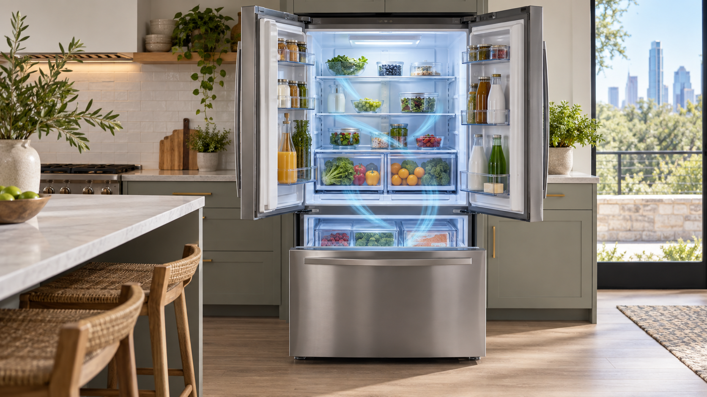

Why the two compartments can behave differently
Most refrigerator-freezer combinations cool the freezer first and move some of that cold air into the fresh-food compartment. If airflow is blocked or the circulation fan stops, the freezer may still seem cold while milk and produce begin warming up. A defrost fault can also allow ice to build around the evaporator and restrict the air path.
This symptom does not identify one failed part by itself. Door seals, a blocked vent, fan operation, temperature controls, and frost patterns all matter when narrowing down the cause.
Safe checks you can make at home
Check that food packages are not covering the air vents between compartments. Make sure the doors close fully and the gaskets are clean and seated. If you have a thermometer, check the actual temperatures rather than judging by touch: the refrigerator should stay at 40°F or below and the freezer at 0°F or below.
Look for a thick layer of frost on the freezer's rear interior panel. That can be a clue that the defrost system or airflow needs attention. Note any unusual fan noise and whether the compressor seems to run continuously. Keep the doors closed as much as possible while you decide what to do next.
When to schedule a repair
If the fresh-food compartment remains above a safe temperature after vents and doors are checked, move perishable food to another refrigerator or cooler and arrange a diagnosis. Avoid removing panels or testing live electrical components yourself. A technician can inspect fan operation, the defrost circuit, sensors, and controls in a safe sequence.
Nova repairs refrigerator cooling and airflow problems across Austin and nearby areas. When you call, share the model number, measured temperatures, frost pattern, and any error code. Those details help the technician prepare for the visit.